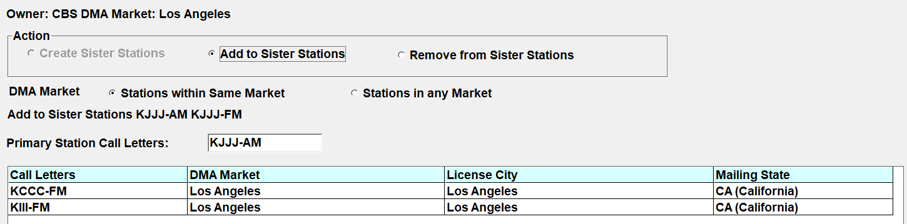
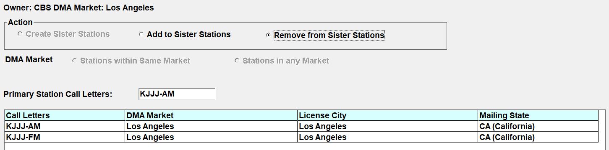

Sister Stations
A sister station group is a group of stations that have the same Owner and are generally located within the same Market, such as a station group or cluster. The Sister Stations tab is used to manage those stations.
Within the Sister Station Screen you can create a new Sister Station, Add a Sister Station to an existing Sister Station Group, or remove a station from a Sister Station group.
When a station is selected that is part of a Sister Station group, the word “Sister Station” shown on the Sister Station tab will be in light green text.
Creating a Sister Station Group
To create a new Sister Station group:
- Click the “Create Sister Stations” radio button.
- By default, the stations with the same owner in the same market are shown. Select the “Stations in any Market” radio button to display stations with the same owner in any market (using the DMA defined on the Main tab).
- From the list of stations that appears in the lower half of the screen, click the station or stations that should be part of this new sister station group and press Save to create the new Sister Station group.
Primary Station Call Letters
Each Sister Station group can have a primary station set in the Primary Station Call Letters field. This can be thought of as the main station in the group, and is used by the Marketron and Wide Orbit export when exporting multicast agreements to determine which station’s spots should be exported.
When creating a group from scratch, the system will put the currently viewed station’s call letters in the Primary Station Call Letters field. If you wish, you can replace this with the call letters from another station within the group by typing in the field. Then click Save to save the group.
Adding a Station to an Existing Sister Station Group
To add a station to an existing Sister Station group:
- Select one of the sister stations from the station dropdown on the Main tab.
- Press the Sister Station tab.
- Click “Add to Sister Stations”, then select the station that you wish to add to the group.
- Press Save to add the new station to the existing sister station group.

Removing a Station from a Sister Station Group
If a station was added to a Sister Station group by mistake, or is no longer a part of a group:
- Click the “Remove From Sister Stations” radio button.
- Click the station to remove from the list of stations in the lower section of the screen, then press Save.
